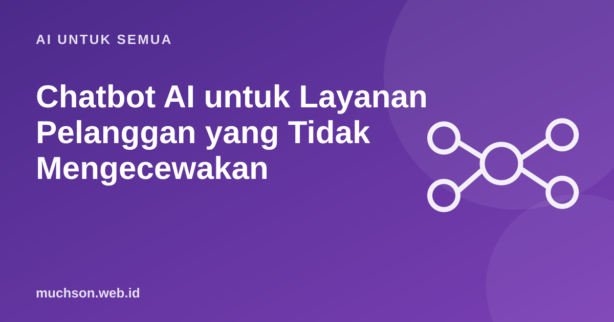

Beranda › Artikel › AI untuk Semua
AI untuk SemuaChatbot AI untuk Layanan Pelanggan yang Tidak Mengecewakan
Semua orang pernah kesal dengan chatbot yang berputar-putar dan tidak pernah menyambungkan ke manusia. Chatbot AI bisa jauh lebih baik, tetapi juga bisa lebih berbahaya: ia bisa menjanjikan sesuatu yang tidak pernah ditawarkan perusahaan. Pengalaman saya mengajar Customer Success menunjukkan bahwa kunci keberhasilannya justru ada pada desain layanan, bukan pada modelnya.

Pelajaran dari kasus Air Canada
Pada Februari 2024, Civil Resolution Tribunal di British Columbia, Kanada, memutuskan Air Canada harus membayar kompensasi kepada penumpang bernama Jake Moffatt. Chatbot di situs maskapai memberinya informasi keliru tentang tarif duka (bereavement fare). Maskapai berargumen chatbot adalah "entitas terpisah", tetapi tribunal menolak: perusahaan bertanggung jawab atas semua informasi di situsnya, termasuk dari chatbot.
Jawaban chatbot Anda adalah ucapan perusahaan Anda. Rancang seolah setiap jawabannya bisa dikutip pelanggan sebagai janji.
Lima prinsip desain
- Cakupan sempit dan jelas. Mulai dari 10-20 pertanyaan paling sering: jam buka, status pesanan, cara retur, lokasi. Tolak dengan sopan hal di luar cakupan.
- Jawab dari sumber resmi. Gunakan RAG dari dokumen kebijakan yang dikelola tim, dan alat untuk data real-time (status pesanan). Jangan biarkan model menjawab dari "pengetahuan umum".
- Eskalasi yang mudah. Tombol "bicara dengan manusia" selalu terlihat, dan otomatis muncul ketika pelanggan marah, bertanya dua kali, atau menyangkut uang.
- Jujur bahwa ini AI. Pelanggan berhak tahu sedang bicara dengan mesin.
- Serah terima yang mulus. Agen manusia menerima ringkasan percakapan, sehingga pelanggan tidak perlu mengulang cerita.
Contoh system prompt
Kamu asisten layanan pelanggan Toko X.
- Jawab HANYA berdasarkan dokumen di <kebijakan> dan hasil alat.
- Bila jawabannya tidak ada, katakan tidak tahu dan tawarkan admin.
- Jangan pernah menjanjikan diskon, refund, atau pengecualian kebijakan.
- Untuk keluhan, permintaan refund, atau pelanggan yang kesal:
minta maaf singkat, lalu panggil alat eskalasi_ke_admin.
- Sebutkan bahwa kamu asisten AI bila ditanya.
- Bahasa Indonesia sopan dan singkat (maksimal 4 kalimat).Mengukur keberhasilan
| Metrik | Arti | Hati-hati |
|---|---|---|
| Containment / resolution rate | Persentase percakapan selesai tanpa manusia | Bisa naik palsu bila eskalasi dipersulit |
| CSAT setelah chat | Kepuasan pelanggan | Bandingkan dengan CSAT agen manusia |
| Waktu sampai jawaban | Seberapa cepat terbantu | |
| Tingkat eskalasi dan alasannya | Topik yang belum bisa ditangani | Sumber perbaikan berikutnya |
| Jawaban salah per 100 percakapan | Dari sampel yang ditinjau manusia | Metrik paling penting untuk risiko |
Tanya jawab
Apakah chatbot AI menggantikan tim CS?
Bisakah dipasang di WhatsApp?
Bagaimana dengan bahasa daerah dan singkatan?
Sumber dan bacaan lanjut
- Moffatt v. Air Canada, 2024 BCCRT 149 (putusan)
- Global News: Air Canada chatbot error, B.C. ruling
- Customer Success vs Customer Service (artikel terkait)